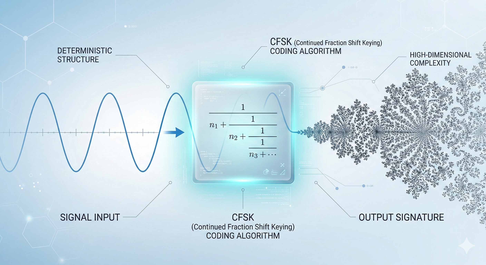
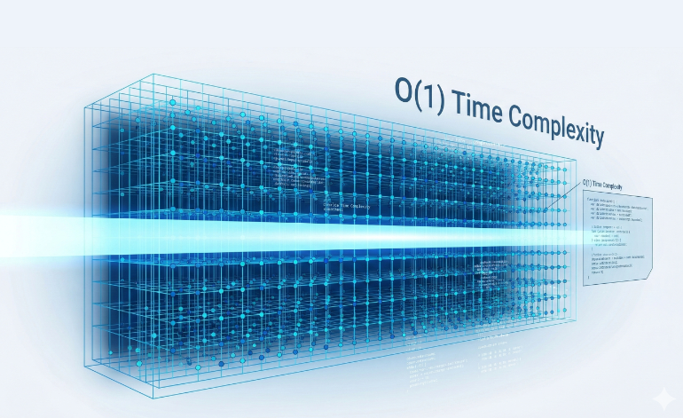
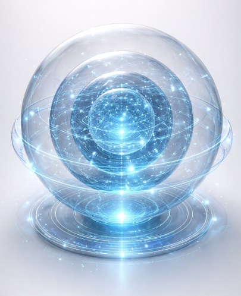

„CFSK ist ein stochastisches Modulationsverfahren für die Low-Energy-Kommunikation. Es nutzt die mathematische Kohärenz von Kettenbruch-Algorithmen (Continued Fractions), um Daten deterministisch unterhalb des Rauschens zu kodieren.“ "CFSK is a stochastic modulation method for low-energy communication. It utilizes the mathematical coherence of continued fraction algorithms to deterministically encode data beneath the noise floor." "CFSK es un método de modulación estocástica para comunicaciones de baja energía. Utiliza la coherencia matemática de algoritmos de fracciones continuas para codificar datos de forma determinista por debajo del nivel de ruido."
Die mathematische Begründung. Die Nutzung logarithmischer Kettenbrüche als hochpräzise Filter zur Informationsdarstellung im Chaos.
The mathematical foundation. The use of logarithmic continued fractions as high-precision filters for information representation within chaos.
El fundamento matemático. El uso de fracciones continuas logarítmicas como filtros de alta precisión para la representación de información dentro del caos.
Bezieht sich auf die fraktale Einbettung im Frequenzraum, welche die Skaleninvarianz des Signals ermöglicht.
Refers to the fractal embedding in the frequency domain, enabling the scale invariance of the signal.
Se refiere a la incrustación fractal en el dominio de la frecuencia, permitiendo la invariancia de escala de la señal.
Das Verfahren, Information durch gezielte Wechsel der mathematischen Signatur zu übertragen.
The method of transmitting information through targeted shifts of the mathematical signature.
El método de transmisión de información a través de cambios específicos en la firma matemática.
Beobachten Sie, wie strukturierte Daten in einem Rauschteppich verborgen und anschließend durch die CFSK-Logik wieder exakt extrahiert werden.
Observe how structured data is hidden within a noise floor and subsequently extracted with absolute precision using CFSK logic.
Observe cómo los datos estructurados se ocultan dentro de un umbral de ruido y luego se extraen con precisión absoluta utilizando la lógica CFSK.
Phase 1: Nutzsignal → Phase 2: Stochastische Kodierung (Rauschen) → Phase 3: Deterministische Dekodierung Phase 1: Payload Signal → Phase 2: Stochastic Encoding (Noise) → Phase 3: Deterministic Decoding Fase 1: Señal Útil → Fase 2: Codificación Estocástica (Ruido) → Fase 3: Decodificación Determinista
Das Prinzip der logarithmischen Kodierung basiert auf der Übertragung von Zuständen in einen Kettenbruchraum. Diese Transformation ermöglicht es, Daten in scheinbar chaotischen Rauschstrukturen unterzubringen, die zu 100% deterministisch dekodierbar sind.
The principle of logarithmic encoding is based on mapping states into a continued fraction space. This transformation allows data to be embedded in seemingly chaotic noise structures that are 100% deterministically decodable.
El principio de la codificación logarítmica se basa en la transferencia de estados a un espacio de fracciones continuas. Esta transformación permite integrar datos en estructuras de ruido aparentemente caóticas que son 100% decodificables de manera determinista.

Die zugrundeliegende mathematische Kettenbruch-Darstellung:
The underlying mathematical continued fraction representation:
La representación matemática subyacente de la fracción continua:
Mit der Einführung von mehrdimensionalen Phasen/Kanälen und unserer O(1) Turbo-Vektor-Berechnung haben wir einen Quantensprung in der Informationsverdichtung erreicht. Berechnungen erfolgen in Echtzeit über vorberechnete Matrizen.
With the introduction of multi-dimensional phases/channels and our O(1) Turbo-Vector Calculation, we have achieved a quantum leap in information density. Computations are handled in real-time via pre-calculated matrices.
Con la introducción de fases/canales multidimensionales y nuestro Cálculo Turbo-Vectorial O(1), hemos logrado un salto cuántico en la densidad de información. Los cálculos se procesan en tiempo real mediante matrices precalculadas.

In Anlehnung an die Technik der Holographie haben wir eine experimentelle Version geschaffen:
Drawing inspiration from holographic techniques, we created an experimental version:
Inspirándonos en técnicas holográficas, creamos una versión experimental:

Überall wo Rauschen ein klassisches Problem darstellt, macht CFSK es zur Lösung.
Wherever noise poses a traditional problem, CFSK turns it into the solution.
Dondequiera que el ruido represente un problema tradicional, CFSK lo convierte en la solución.
Problem: Extrem schwaches SNR (< 0 dB).
Lösung: Das Signal IST das Rauschen. Der Empfänger wertet lediglich das fraktale Muster aus.
Problem: Extremely weak SNR (< 0 dB).
Solution: The signal IS the noise. The receiver merely evaluates the fractal pattern.
Problema: SNR extremadamente débil (< 0 dB).
Solución: La señal ES el ruido. El receptor simplemente evalúa el patrón fractal.
Millionen Sensoren senden interferenzfrei im selben Band. Jeder nutzt seine eigene CFSK-Signatur.
Millions of sensors transmit interference-free in the same band. Each uses its own CFSK signature.
Millones de sensores transmiten sin interferencias en la misma banda. Cada uno usa su propia firma CFSK.
Bietet "Plausible Deniability", da kein Signal erkennbar ist. Nachrichten verschwinden im Hintergrundrauschen.
Provides "Plausible Deniability" as no signal is detectable. Messages vanish into background noise.
Proporciona "Plausible Deniability" ya que no se detecta ninguna señal. Los mensajes desaparecen en el ruido de fondo.
Low Probability of Intercept: Das Radar-Signal sieht aus wie atmosphärisches Rauschen.
Low Probability of Intercept: The radar signal appears as atmospheric noise.
Low Probability of Intercept: La señal de radar parece ruido atmosférico.
5. Astrophysik: Analyse kosmischen Rauschens auf extraterrestrische CFSK-Strukturen (SETI).
6. Neuromorphes Computing: Information liegt bereits in der Rauschstruktur (Stochastic Computing).
7. Post-Quantum Crypto: Physikalische Zusatzschicht, die nicht gehackt werden kann.
8. Medizin & Finanzen: Unhörbare Wasserzeichen, strahlungsarme Implantate und Covert-Trading-Signale.
5. Astrophysics: Analyzing cosmic noise for extraterrestrial CFSK structures (SETI).
6. Neuromorphic Computing: Information is native to the noise structure (Stochastic Computing).
7. Post-Quantum Crypto: Physical additional layer that resists hacking.
8. Medicine & Finance: Inaudible watermarks, ultra-low radiation implants, and covert trading signals.
5. Astrofísica: Análisis de ruido cósmico en busca de estructuras CFSK extraterrestres (SETI).
6. Computación Neuromórfica: La información es nativa de la estructura del ruido (Stochastic Computing).
7. Post-Quantum Crypto: Capa física adicional que resiste el hackeo.
8. Medicina y Finanzas: Marcas de agua inaudibles, implantes de radiación ultrabaja y señales de trading encubiertas.